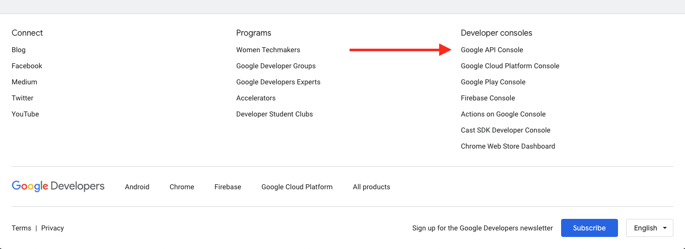

mps-youtubeのAPIキーを更新する
Posted on August 16, 2020
mps-youtubeで音楽を聴こうと思ったら、以下のようなエラーが出た。
Error fetching data. Possible network issue. Youtube Error 403: The request cannot be completed because you have exceeded your quota.
ので、mps-youtubeレポのトラブルシューティングに基づいて作業をする。
また、上記記事で参考にされているslickremix.com -- Get API Key for YouTubeも参考にする。 ただし、上記記事では「手順3までやる」と書いてあるが、最後(8)までやる必要がある。
1. Google developpersにて、プロジェクトを作成してTokenを取得。
https://developers.google.com/ に飛び、一番下(右下)のGoogle API Consoleからコンソールを開く。

左上のGoogle APIsの文字の横に「Project」という部分があるので選択→右上の「新しいプロジェクト」からプロジェクトを作成する。
ダッシュボードの「APIとサービス」→「ライブラリ」からYouTube Data API v3を選択し有効化。
最後に認証情報の作成が必要なので、あとはUIの流れに任せればTokenが手に入ります。
2. mps-youtubeで入力する
上記記事にあるとおり、以下のコマンドで入力する。一度appを終了させる必要があることに注意。
mps-youtube
> set api_key <key value>
> q # quit app